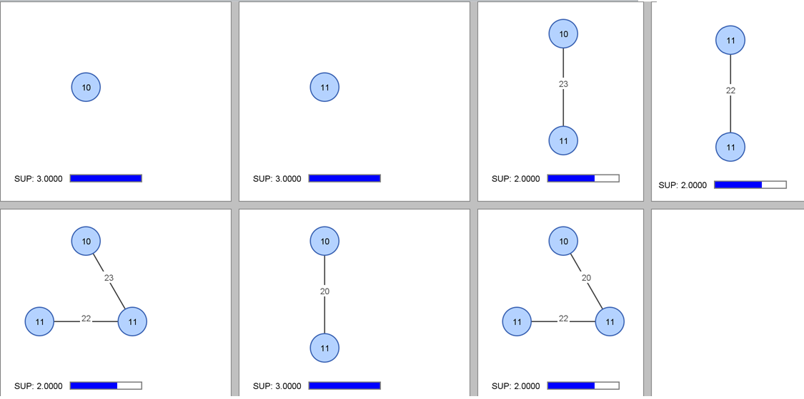
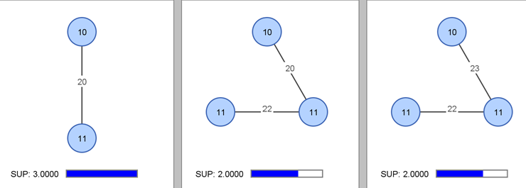

Mining Frequent Closed Subgraphs in a Graph Database using the CloseGraph algorithm (SPMF documentation)
This page explains how to run the CloseGraph algorithm using the SPMF open-source data mining library.
What is this algorithm?
CloseGraph is a fast algorithm for discovering frequent closed subgraphs in a graph database. The algorithm was proposed by Yan and Han (2003).
There are several algorithms for discovering frequent subgraphs such as gSpan and TKG to name a few. The advantage of CloseGraph over traditional subgraph mining algorithms is that it finds only the frequent closed subgraphs. The closed subgraphs are interesting because they provide a summary of all frequent subgraphs that is often much smaller than the set of all subgraphs, and it can be shown that no information is lost. Moreover, mining frequent closed subgraphs can be much faster than mining all frequent subgraphs. CloseGraph is one of the most efficient algorithms for mining closed subgraphs, and is based on gSpan.
How to run this example?
If you want to mine frequent closed subgraphs in a graph database:
- If you are using the graphical interface, (1) choose the "CloseGraph" algorithm, (2) select the input file "contextTKG.txt", (3) set the output file name (e.g. "output.txt") (4) set minsup to 50% and (5) click "Run algorithm".
- If you want to execute this example from the command line,
then execute this command:
java -jar spmf.jar run CloseGraph contextTKG.txt output.txt 50%
in a folder containing spmf.jar and the example input file contextTKG.txt. - If you are using the source code version of SPMF, launch the file "MainTestCloseGraph.java" in the package ca.pfv.SPMF.tests.
What is the input of the algorithm?
The input is a set of labeled connected graphs and a threshold named minsup (a value between 0 and 100 %). Moreover, a few optional parameters can be set, which will be described further down this page.
To explain the input more clearly, some definitions are first introduced. A labeled graph is a set of vertices and edges, having some labels. Let’s me illustrate this idea with an example. Consider the following graph:

This graph contains four vertices (depicted as yellow circles). These vertices have labels such as “10” and “11”. These labels provide information about the vertices. For example, imagine that this graph is a chemical molecule. The label 10 and 11 could represent the chemical elements of Hydrogen and Oxygen, respectively. Labels do not need to be unique. In other words, the same labels may be used to describe several vertices in the same graph. For example, if the above graph represents a chemical molecule, the labels “10” and “11” could be used for all vertices representing Oxygen and Hydrogen, respectively.
Now, besides vertices, a graph also contains edges. The edges are the lines between the vertices, here represented by thick black lines. Edges also have some labels. In this example, four labels are used, which are 20, 21, 22 and 23. These labels represents different types of relationships between vertices. Edge labels do not need to be unique. A graph is a connected graph if by following the edges, it is possible to go from any vertex to any other vertices.
The goal of frequent subgraph mining is to discover interesting subgraph(s) appearing in a set of graphs (a graph database). But how can we judge if a subgraph is interesting? This depends on the application. The interestingness can be defined in various ways. Traditionally, a subgraph has been considered as interesting if it appears multiple times in a set of graphs. In other words, we want to discover subgraphs that are common to multiple graphs. This can be useful for example to find association between chemical elements common to several chemical molecules.
The algorithm takes a graph database as input. Then, a frequent subgraph mining algorithm will enumerate as output all frequent subgraphs. A frequent subgraph is a subgraph that appears in at least minsup percents of the graphs from the graph database. For example, let’s consider the following graph database containing three graphs, which is provided in the file contextTKG.txt of the SPMF distribution.

This database contains three graphs, respectively called Graph 1, 2 and 3.
What is the output of the algorithm?
The output of a traditional frequent subgraph mining algorithm is the set of all frequent subgraphs. A frequent subgraph is a subgraph that appears in at least minsup percent of the graphs of the input graph database, and their support values. In this example, consider that the minsup parameter is set to 50 % (which means that frequent subgraphs must appear in at least 3 graphs of the input database since 50 % * 3 = 2). If we apply a traditional subgraph mining algorithm like gSpan, then 7 frequent subgraphs would be found:

Consider the subgraph in the center of the third row. This subgraph is frequent and is said to have a support (a frequency) of 3 since it appears in three of the input graphs. These occurrences are highlighted in red, below:

Note that the support of a graph can be also expressed as a percentage. Since these subgraphs appear in three input graphs and the input database contains three graphs, the support of that subgraph expressed as a percentage is 3 / 3 = 1 (which means 100 %).
But a problem with traditional frequent subgraph mining algorithms is that a very large number of subgraphs may be found, and some can be viewed as redundant.
To address this problems, CFGM only discovers the frequent closed subgraphs rather than all frequent subgraphs.
A frequent closed subgraph is a frequent subgraph that has no supergraph having the same support. It can be shown that by only discovering the closed subgraphs, a much smaller result set can be usually found compared to all frequent subgraphs and that no information is loss. The set of frequent closed subgraphs for this example if minsup = 50% is:

Thus, CFGM outputs 3 frequent closed subgraphs.
The two key advantages of mining frequent closed subgraphs is that (1) it can be faster than mining all frequent subgraphs, and (2) no information is loss (all frequent subgraphs could be derived from the frequent closed subgraphs).
Optional parameters
This implementation of CloseGraph also has four optional parameters:
- maxNumberOfEdges : the maximum number of edges that frequent subgraphs should contain. This can be used to reduce the search space and find less frequent subgraphs.
- outputSingleFrequentVertices: if this parameter is set to true (by default), then frequent subgraphs containing a single vertex will also be output. Otherwise, not.
- outputDotFile: if this parameter is set to true (by default : false), then a DOT file will be also created as output. A DOT is a GraphViz file that can be used to visualize the frequent subgraphs using GraphViz
- outputGraphIds: if this parameter is set to true (by default: true), then the output file will indicate for each frequent subgraph, the list of input graphs where the subgraph appears.
The optional parameter can be specified in the graphical user interface of SPMF, but also when running SPMF from the command line. For example, to call CloseGraph from the command line with minsup = 0.9, maxNumberOfEdges = 2, outputSingleFrequentVertices = true, outputDotFile = false, and outputGraphIds = true, the command can be written as follows:
java -jar spmf.jar run CloseGraph contextTKG.txt output.txt 0.5 2 true false true
Input file format
The input file format is defined as follows. It is a text file which contains one or more graphs. A graph is defined by a few lines of text that follow the following format:
- t # N This is the first line of a graph. It indicates that this is the N-th graph in the file
- v M L This line defines the M-th vertex of the current graph, which has a label L
- e P Q L This line defines an edge, which connects the P-th vertex with the Q-th vertex. This edge has the label L
For the above example, the input file is defined as follows:
@FILETYPE="Labeled graph database"
@SOURCE="SPMF SOFTWARE https://philippe-fournier-viger.com/spmf/"
t # 0
v 0 10
v 1 11
v 2 10
v 3 11
e 0 1 20
e 1 2 23
e 1 3 22
t # 1
v 4 10
v 5 11
e 4 5 20
t # 2
v 6 10
v 7 10
v 8 11
v 9 11
e 6 7 21
e 7 8 23
e 7 9 20
e 8 9 22
The first two lines are metadata indicating the type of data and the source of the data.
Output file format
The output file format is defined as follows. It is a text file.The first two lines are metadata indicating the type of patterns in this file and the source of the data. Then the following lines provide the list of frequent closed subgraphs found in the input graph database. A frequent closed subgraph is defined by a few lines of text that follow the following format:
- t # N * Z This is the first line of a subgraph. It indicates that this is the N-th subgraph in the file and that its support is Z.
- v M L This line defines the M-th vertex of the current subgraph, which has a label L
- e P Q L This line defines an edge, which connects the P-th vertex with the Q-th vertex. This edge has the label L
- x X1 X2 ... This line lists the identifiers of all the graphs X1, X2 ... that contains the current subgraph. This line is only output if the outputGraphIds parameter is set to true.
For example, for the above example, the output is:
@FILETYPE="Frequent subgraphs"
@SOURCE="SPMF SOFTWARE https://philippe-fournier-viger.com/spmf/"
t # 0 * 3
v 0 10
v 1 11
e 0 1 20
x 0 1 2
t # 1 * 2
v 0 10
v 1 11
v 2 11
e 0 1 20
e 1 2 22
x 0 2
t # 2 * 2
v 0 10
v 1 11
v 2 11
e 0 1 23
e 1 2 22
x 0 2
If the optional parameter outputGraphIds is set to false, the "x" line is omitted from the output, as shown below:
@FILETYPE="Frequent subgraphs"
@SOURCE="SPMF SOFTWARE https://philippe-fournier-viger.com/spmf/"
t # 0 * 3
v 0 10
v 1 11
e 0 1 20
t # 1 * 2
v 0 10
v 1 11
v 2 11
e 0 1 20
e 1 2 22
t # 2 * 2
v 0 10
v 1 11
v 2 11
e 0 1 23
e 1 2 22
Performance
The CloseGraph algorithm is an important algorithm that is efficient and has inspired several other algorithms. This implementation is optimized and includes a few optimizations to increase efficiency.
Where can I get more information about the algorithm?
This is the article describing the CloseGraph algorithm:
Xifeng Yan and Jiawei Han. 2003. CloseGraph: mining closed frequent graph patterns. In Proceedings of the ninth ACM SIGKDD international conference on Knowledge discovery and data mining (KDD '03).